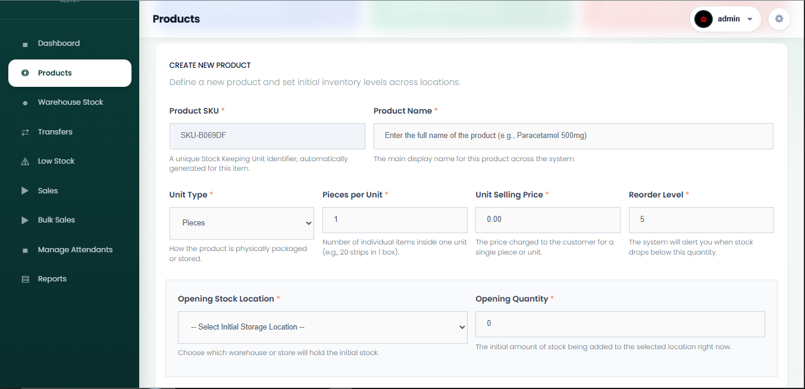
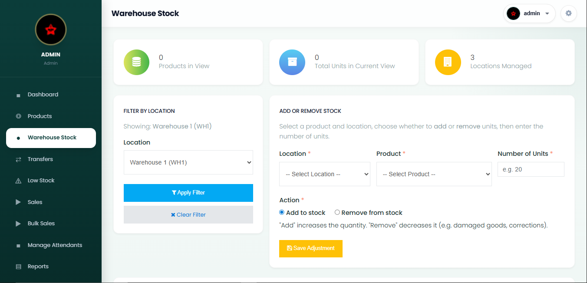
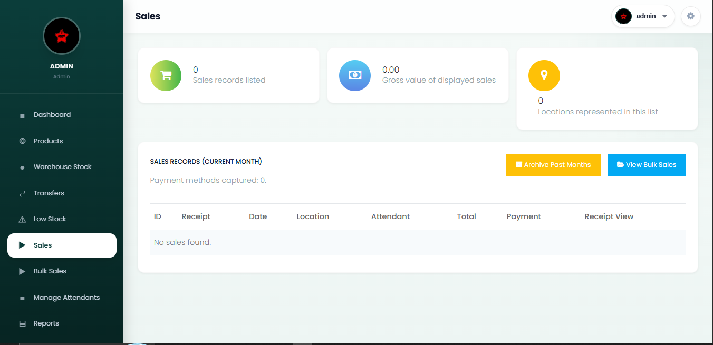
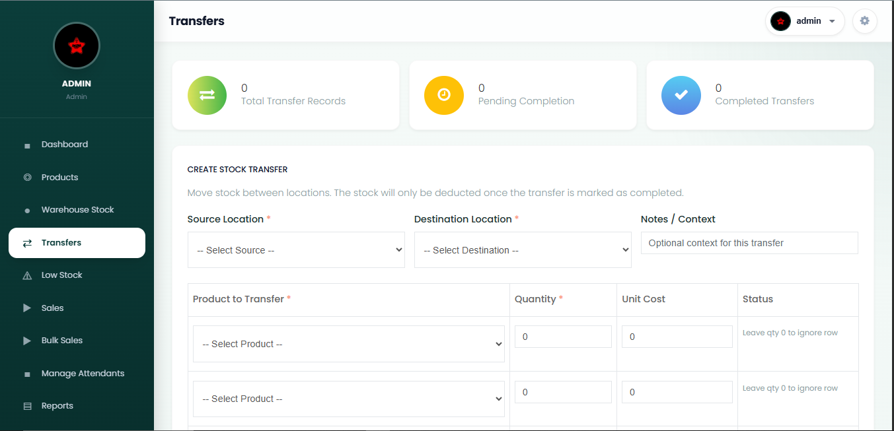
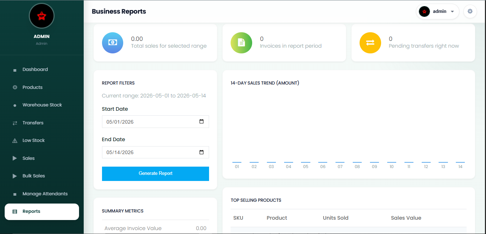
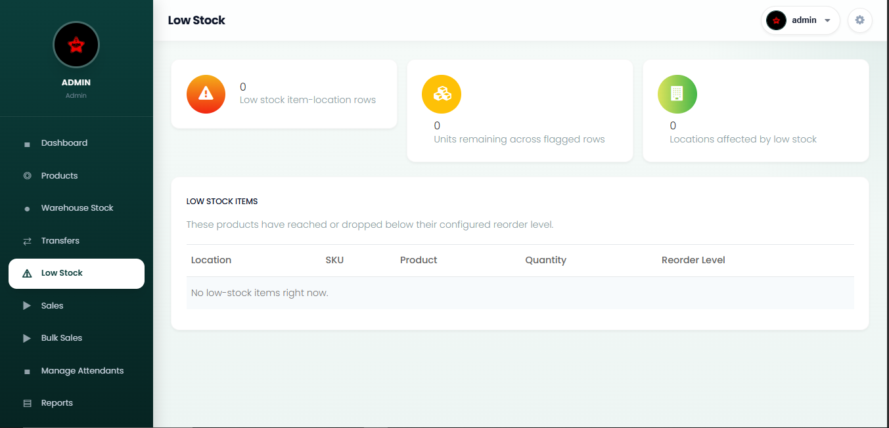
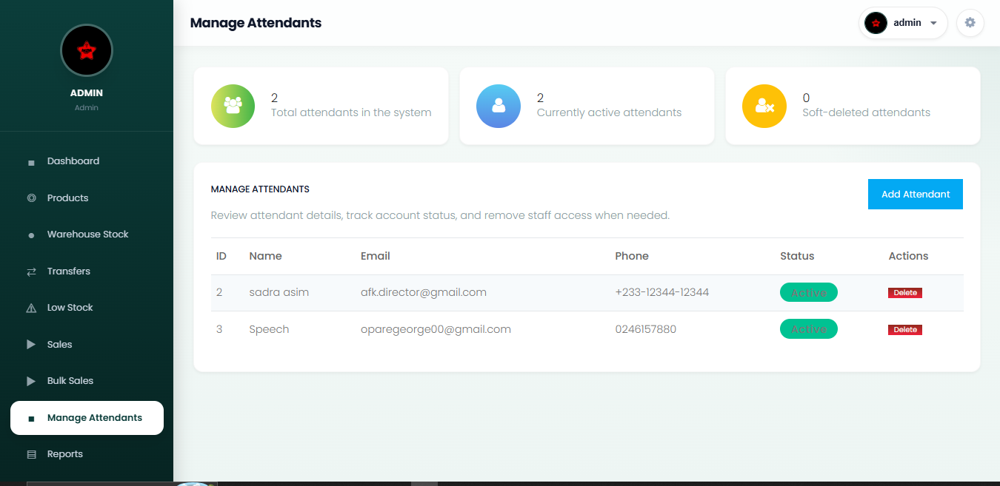
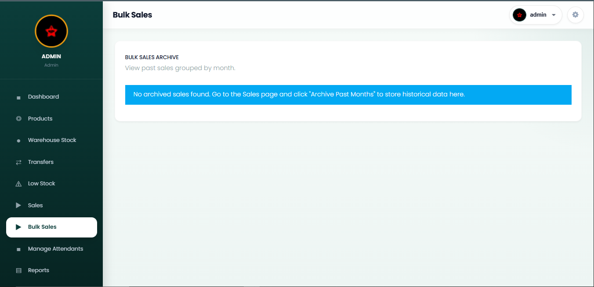

Retail operations / Ghana
WAIV-IN
Inventory management
A retail operations platform connecting stock, sales and reporting across multiple locations, with WhatsApp AI tools for faster access to business information.

The project
One view of stock, sales and movement
Three locations. One coordinated workflow for the teams moving products every day.
WAIV-IN was developed for a Ghanaian retail operation managing inventory across two warehouses and a central store. The team needed a dependable way to see what was available, process sales and coordinate stock transfers without relying on disconnected manual records.
Built with CodeIgniter 3, the platform brings inventory, point of sale, user permissions and reporting together. Administrators can also query business information through a WhatsApp AI assistant, while automated reports and low-stock alerts make important changes easier to catch.
Operations / Response
Designed around the work behind each sale
What was getting in the way
- Manual stock records across locations made discrepancies difficult to trace.
- Sales processing and receipt creation took too many separate steps.
- Managers lacked a current view of stock levels and sales performance.
- Transfers and low-stock situations were hard to coordinate proactively.
How WAIV-IN responds
- Centralized stock tracking with location-level visibility and transfer records.
- A checkout flow that updates stock and produces receipts as sales are completed.
- Dashboards, low-stock alerts and scheduled reports for operational oversight.
- WhatsApp AI queries that make key business information easier to retrieve.
Platform capabilities
Tools for the whole retail workflow
From stock intake to customer checkout, each part of the system supports a practical day-to-day task.
Multi-location inventory
Track stock across two warehouses and a central store, including transfers between locations.
Point of sale
Give attendants a direct checkout flow with automatic stock deduction and receipt generation.
Operational analytics
Review sales performance, inventory levels and activity through management dashboards.
WhatsApp AI assistant
Let administrators ask natural-language questions about sales, stock and transfers.
Stock transfers
Move inventory between warehouses and stores with a record of each transfer.
Receipt printing
Create formatted, print-ready receipts as part of the sales process.
Role-based access
Separate administrator and attendant permissions around their responsibilities.
Scheduled reporting
Send monthly performance summaries to the team through WhatsApp.
Responsive interface
Support desktop and handheld use in busy retail environments.
Product walkthrough
Inside the WAIV-IN interface
A selection of the screens staff use to manage stock, process sales and review activity.

















Implementation
Technology behind the workflow
The platform pairs a maintainable PHP application with integrations for messaging and AI-supported information retrieval.
Planning a retail system?
Talk with TechWaiv about inventory, sales and operations software for your team.